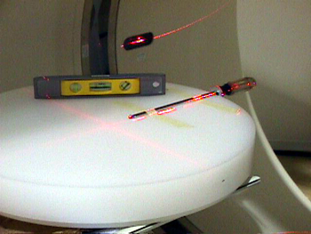
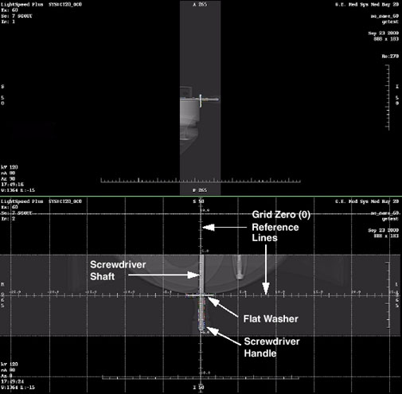

Operating Documentation
Direction 5193575-800, Rev# 5
LightSpeed 7.X Service Information - Adv
Operating Documentation |
| Required Persons | Preliminary Reqs | Procedure | Finalization |
|---|---|---|---|
| 1 | Timing Not Applicable | 60 mins | 15 mins |
This procedure defines the necessary steps to adjust the alignment lights.
| Last Revised: | October 16, 2008 |
| Item | Qty | Effectivity | Part# | Manufacturer | |
|---|---|---|---|---|---|
| FE torque wrench set | 1 | - | 5135228 or equivalent | - | |
| 5 mm hex end socket | 1 | - | - | - | |
| Long Phillips #2 screwdriver | 1 | - | - | - | |
| Large washer approximately 0.5 inch ID, 1.5 inch OD | 1 | - | - | - | |
| Torpedo Level | 1 | - | - | - | |
| 5 mm Hex key | 1 | - | - | - | |
| Poly Phantom | 1 | - | - | - | |
| Item | Qty | Effectivity | Part# | Manufacturer | |
|---|---|---|---|---|---|
| Masking Tape | AR | - | - | - | |
| Condition | Reference | Eff |
|---|---|---|
Resetting the C-Pulse procedure must be run prior to adjusting the alignment lights to insure the gantry rotates the lasers to the proper home location. | - | - |
Remove gantry right side cover.
Refer to Parts Replacement → Gantry → Enclosure → (Cover Removal Procedure).
Turn OFF the Axial Drive, HVDC switches on the gantry’s Service Switch Panel.
Remove the gantry left side cover, top covers Scan Window, rear and front covers.
| NOTE: | Either position the front cover to the side to be able to connect the control panels or follow the front cover instructions for relocating the controls to the gantry for use. |
Remove cradle pad and associated accessories.
Place Poly Phantom on the end of cradle so it extends 2 inches beyond the cradle end.
Verify phantom is level front to back and side to side. Adjust as necessary.
| POSSIBLE PHYSICAL INJURY | |
| GANTRY MAY ROTATE WHEN ALIGNMENT LIGHTS ARE TURNED ON. | |
| Verify that all personnel are clear of the system, and the Gantry rotates freely to 180 degrees. |
Turn on axial drive service switch then turn on laser lights using gantry control panel. Turn off axial drive after gantry movement stops and lasers are on.
Assemble washer and screwdriver and secure to phantom as shown in Illustration 1.
Illustration 1: Internal and External Laser Alignment Jig Setup Example

Adjust jig position such that:
Internal lasers shine on the washer’s edge center
Sagittal and Coronal lasers shine on the center of the screwdriver shaft
| NOTE: | Chose either the left or right side of the jig as a reference for this procedure. |
Select New Patient, Service Protocol tab, 42.1 Service Generic Scan, Create New Series, Scout.
Table 1: Laser Align Generic Service Scan Scout Protocol
| SCOUT | SCAN TYPE | START LOC. | END LOC. | KV | MA | SCOUT PLANE |
|---|---|---|---|---|---|---|
| 1 | Scout | S 50 | I 50 | 120 | 80 | 90 |
| 2 | Scout | S 50 | I 50 | 120 | 80 | 0 |
Turn on the HVDC and Axial drive service switches if not already on.
Confirm and Scan.
Return cradle to isocenter (location 0.0) after scanning.
From Image Works, Browser Select Exam, Series, Image.
Select Format one over one (lower left)
| NOTE: | Both scout scans should now be displayed. Adjust the window and level setting so you can see the outline of the screwdriver handle. Click in a viewport to activate it, and select Grid. Make sure to check the grid for both scouts. |
The washer and screwdriver shaft need to be centered under the zero (0) grid lines. Both washer and screwdriver should also be parallel to the associated grid lines. See Illustration 2.
Illustration 2: Aligning the Laser Adjustment Jig to ISO Center and the Z-Axis

Write down the error deltas (for all 3 axis of movement X,Y and Z) from the Zero (0) grid lines to the center of the screwdriver shaft and washer edge. Use measure distance if desired.
Reposition the jig exactly according to the error delta using gantry table controls. ONLY MOVE THE PHANTOM FOR LEFT/RIGHT ADJUSTMENT. Use table elevation to position jig in “Y” (anterior/posterior) and move table in or out for position in Z (Superior/Inferior)
| NOTE: | Changing Elevation will post a message window. Close message window and proceed. |
Select Repeat Series and scan.
Repeat Step 10 through Step 18 until jig reference points are centered under the grid zero (0) lines.
| Once the jig is aligned to ISO Center and the Z-Axis, do not change it. If it is changed you will need to start over. | |
Return cradle to isocenter (location 0.0) after scanning.
| POSSIBLE PHYSICAL INJURY | |
| GANTRY MAY ROTATE WHEN ALIGNMENT LIGHTS ARE TURNED ON. | |
| Verify that all personnel are clear of the system, and the Gantry rotates freely to 180 degrees. |
Press the Alignment Lights button.
| SERIOUS INJURY OR DEATH | |
| UNEXPECTED GANTRY ROTATION CAN RESULT IN SERIOUS INJURY OR DEATH. | |
| Never service the gantry with the axial drive enabled. |
Turn OFF Axial Enable switch. Turn on the alignment light override switch on the ORP or SCORP (it is the only switch available through the cover).
Adjust the Reference Internal Laser chosen in step 7 to shine on the washer’s edge center. Reference Illustration 3. Mounting Screws Angular Alignment Screw Position Alignment Screws
Illustration 3: Laser Adjustment Screws

| NOTE: | Properly adjusted Lasers will bisect the output port of the other 2 Internal lasers. |
Adjust the Sagittal and Coronal lasers so they shine on the screwdriver shaft at ISO Center. Set Coronal lasers as level as possible and Sagittal laser as parallel to the cradle as possible. Tracking adjustments will be performed in later steps.
Move the cradle out of the gantry to 240 mm position, using the gantry control panel.
Adjust the Reference External Laser to shine on the washer’s edge center. Adjust external laser angular alignment parallel to the gantry lasers using a tape measure along either side of the cradle.
After Reference Lasers have been adjusted, raise and lower the table, and verify both the External and Internal lasers track the washer’s edge center.
| If vertical angle adjustment is necessary, make sure you center the jig at ISO Center before you adjust the Internal or External reference lasers. | |
Remove the screwdriver jig without disturbing the phantom.
Now that the reference lasers have been set, use a piece of notebook paper to adjust the other Internal and External lasers to coincide with the reference lasers. (See Alignment Lights Visual Checks)
Place another object, such as a full contrast bottle or unopened soda can, on the phantom. Attach masking tape and position the object at ISO Center using the laser lights. Refer to Illustration 4.
Using a pen, carefully mark the laser intersection points on the masking tape. Once set, DO NOT DISTURB THE JIG.
Illustration 4: Sagittal and Coronal Laser Alignment Jig Setup

Using the gantry control panel, move the cradle out of the gantry to 240 mm. Verify the Sagittal and Coronal laser lights track your pen marks.
| If Sagittal or Coronal angle adjustment is necessary, make these adjustments one at a time, and verify the laser tracks from Internal to External landmarks before making the next adjustment. If the jig is disturbed, reposition the jig at ISO Center to reestablish your reference. Verify both Sagittal and Coronal lasers shine on the pen marks at ISO Center before proceeding. The loss of reference will require repeating Step 8 through Step 19 and Step 29 through Step 33. This would be necessary to ensure accuracy. | |
The last adjustment is the un-referenced Coronal laser to the Reference Coronal laser chosen in Step 9. Place a sheet of plain white paper in the center of the gantry opening and adjust the un-referenced coronal laser to bisect the beam of the previously adjusted reference coronal laser.
Turn OFF the Axial Drive, HVDC and 120 VAC switches on the gantry’s Service Switch Panel.
Turn off the alignment lights override switch on the ORP (or SCORP).
Install gantry front cover, scan window, top covers and left side cover.
Refer to Parts Replacement → Gantry → Enclosure → (Cover Procedures).
Turn ON the 120 VAC, Axial Drive and HVDC switches on the gantry’s Service Switch Panel.
Install the gantry right side cover.
Perform Alignment Lights Visual Checks.